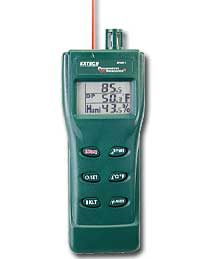
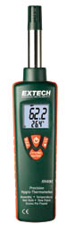

<br /><br />
<h3 align="center"></h3>
<br />
<table class="creekside" align="center" width="650px">
    <tr class="header">
        <td colspan="4">&nbsp;&nbsp;&nbsp;Digital Psychrometer + InfraRed Thermometer</td>
    </tr>
    <tr>
        <td align="center">
            
            <b>RH401</b>
        </td>
        <td valign="top" style="padding: 10,10,10,10;">
            <p><b>Features:</b></p>
            <ul>
                <li>Triple display with backlighting</li>
                <li>View Air temp+RH+surface temp</li>
                <li>View Dew Point+RH+surface temp</li>
                <li>View Wet Bulb+RH+surface temp</li>
                <li>InfraRed Thermometer with Built-in laser pointer</li>
                <li>8:1 distance to target ratio</li>
                <li>Adjustable Emissivity from 0.3 to 1.0</li>
                <li>Precision humidity capacitance sensor is retractable for protection during transportation and storage.</li>
                <li>Calculates T1 (IR Surface Temperature) - DP (Dew Point) differential</li>
            </ul>
        </td>
    </tr>
</table>
<br />
<table class="creekside" align="center" width="650px">
    <tr class="header">
        <td colspan="4">&nbsp;&nbsp;&nbsp;Precision Hygro-Thermometer</td>
    </tr>
    <tr>
        <td align="center">
            
            <b>RH490</b>
        </td>
        <td valign="top" style="padding: 10,10,10,10;">
            <p><b>Highest 2% RH accuracy with Grains Per Pound (GPP) Display</b></p>
            <ul>
                <li>Less then 30 seconds of RH response time</li>
                <li>Water vapor in GPP</li>
                <li>Dual backlit display</li>
                <li>
                    Simultaneous display of:
                    <ul>
                        <li>Humidity/Temperature</li>
                        <li>Humidity/Dew Point</li>
                        <li>Humidity/Wet Bulb</li>
                    </ul>
                </li>
                <li>Slim design with rubberized side grips</li>
                <li>Data Hold and Min/Max functions</li>
            </ul>
        </td>
    </tr>
</table>
<br /><br />